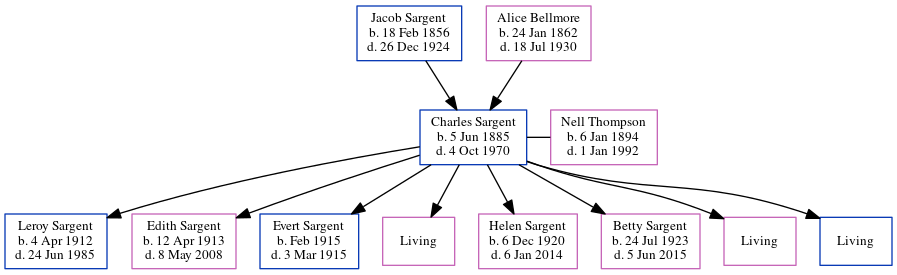

Frank Edward Sargent 1894 - 1964
[ Home ] | [ Calendar ] | [ Surnames Index ] | [ Errors ] | [ Family History ]The child of Jacob Sargent and Alice Bellmore, Frank Sargent, the third cousin three-times-removed on the mother's side of Nigel Horne, was born in Silver Creek, Merrick, Nebraska, USA on 8 Jun 18941,2 and married Mahala Robertson (with whom he had 8 children: Rosa, Gilbert Jake, Pearl, Lawrence Leroy, Cletus Edward, Harvey A, Leon Burton and Percy B, along with 3 surviving children) in Kankakee, Illinois, USA on 17 Feb 19143.
During his life, he was living in Newton, Indiana, USA on 1 Jan 19205; in Jackson, Indiana on 1 Apr 19306; and in Lake Village, Indiana on 18 Apr 19404. He served in the military from 1917 to 1918 (world War I Draft Registration Cards).
He died on 2 Oct 1964 in Newton, Jasper, Indiana1 (coronary Thrombosis) and was buried at Oakland Cemetery, Morocco, Indiana on 4 Oct 1964 (a partly cloudy day).
Parents
- Jacob was born on 18 Feb 1856
- Alice Josephine was born on 24 Jan 1862
Children
- Gilbert Jake was born on 17 May 1916
- Lawrence Leroy was born on 13 Jan 1925
- Harvey A was born on 28 Mar 1933
- Leon Burton was born on 17 Nov 1934
- Percy B was born on 22 Jun 1937
Citations
- Social Security Death Index - Findmypast
- World War I Draft Registration Cards - Findmypast
- United States Marriages - Findmypast
- US Census 1940 - Findmypast (was age 46 and the head of the household)
- US Census 1920 - Findmypast (was age 25 and the head of the household)
- US Census 1930 - Findmypast (was age 37 and the head of the household)
Media
Frank Sargent - Mahala - gravestone

Frank Sargent Obituary

Frank Edward Sargent

Frank Sargent - 2

US Census 1920 - USC/1920/004965827/01068/001
US Census 1930 - USC/1930/004950635/01043/000
World War I Draft Registration Cards - USM/WWIDR/1669446947
Social Security Death Index - USBMD-SSDI-721072451
Family Tree
Map
Generated by ged2site. Last updated on Jul 3, 2024
Known Issues
Burial date (4 Oct 1964) has no citations
No records of living with anyone
Location for "military service" on 1917-1918 is empty